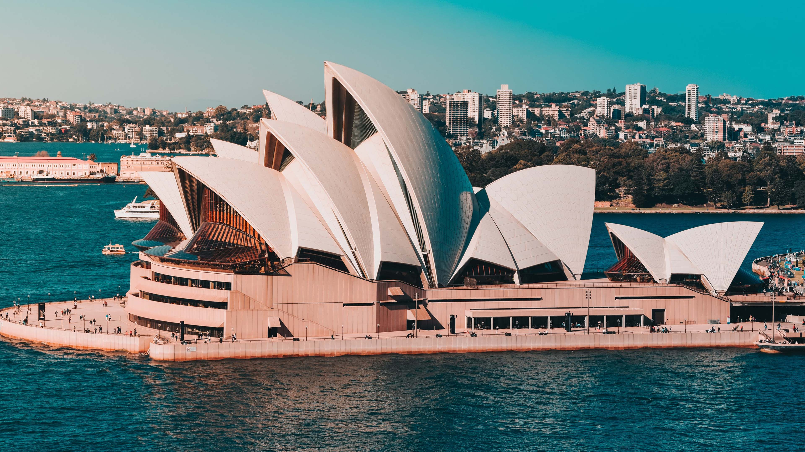

Sydney Opera House
Austrália 🇦🇺
Localização: Sydney, Austrália
Construção: Final dos anos 1950 e início dos anos 1970
Ícone da arquitetura moderna, o Sydney Opera House se destaca por suas conchas brancas e pela vista deslumbrante sobre a baía de Sydney. É um dos pontos turísticos mais fotografados do mundo e símbolo da Austrália.